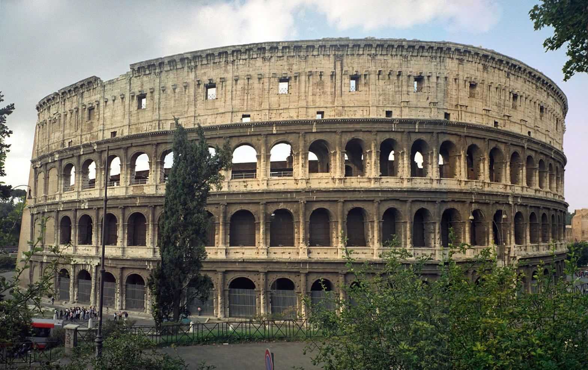
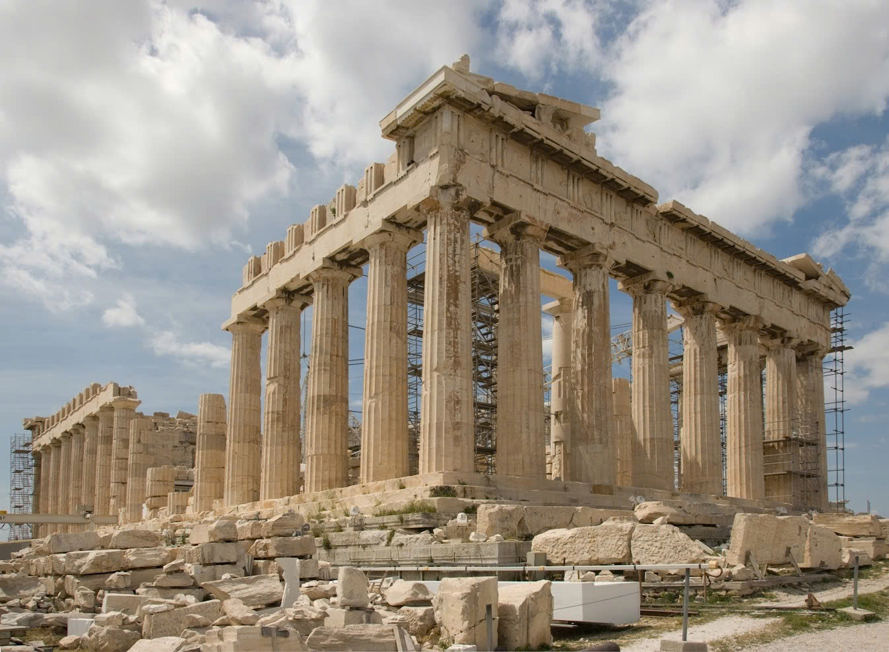
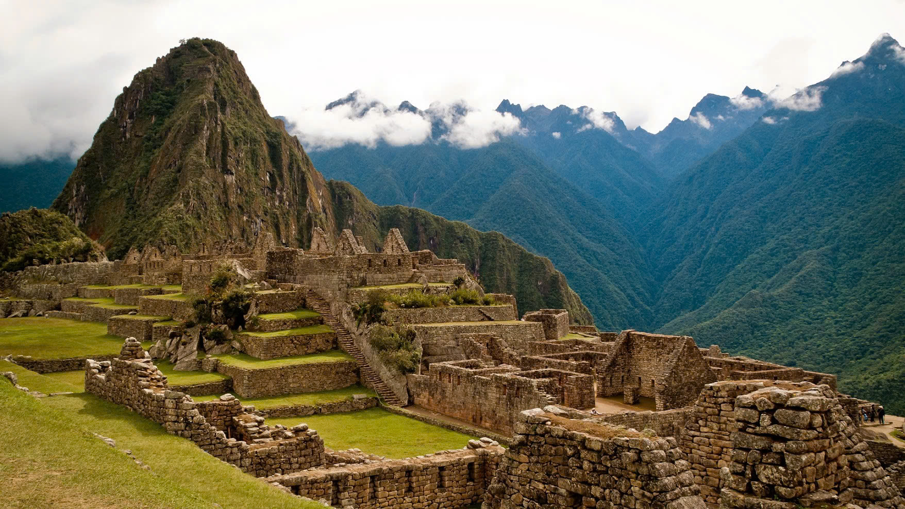

Ancient Roman architecture

Ancient Roman architecture took inspiration from classical Greek styles but evolved into its own distinct form. Flourishing during the Roman Republic and Empire, it introduced innovative materials like concrete and structural advancements such as the arch and dome, resulting in robust and well-engineered buildings across the empire.
Ancient Greek architecture

The ancient Greek architecture, developed by the Hellenic people, is renowned for its enduring legacy. Thriving from the Greek mainland to colonies in Anatolia and Italy, its most famous remnants are majestic temples and open-air theatres, which continue to influence modern classical design.
Ancient Indian Architecture

Indian architecture's history is as ancient as its civilization, tracing roots back to the Indus Valley. Characterized by a rich variety of temples and rock-cut structures, it reflects the diverse geographical, climatic, and cultural landscapes of the subcontinent throughout various historical eras.